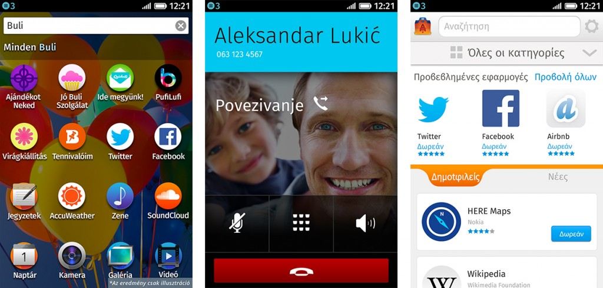

【美商謀智訊息稿】Mozilla 是全球性的非營利組織，以推動網路的平等、自由、開放為宗旨。而其合作夥伴 Deutsche Telekom 透過德國境內的第二品牌 Congstar 電信公司，在今年十月發表第二波 Firefox OS 裝置。而隨著南美洲的銷售活動同樣於十月開跑之後，Firefox OS 智慧型手機最近又將於更多歐洲市場中現身。
過去幾個星期內，Deutsche Telekom 已透過 Telekom 與 COSMOTE 電信商 (其分別位於匈牙利與希臘的子公司) 銷售 Firefox OS 智慧型手機。而今年稍早之前，Deutsche Telekom 亦經由波蘭境內的 T-Mobile 電信商發售手機。
挪威 Telenor 電信營運商也同樣積極支援 Firefox OS。從上個禮拜於匈牙利發售首款 Firefox OS 裝置之後，亦從今天起在塞爾維亞 (Serbia) 和蒙特內哥羅 (Montenegro) 境內銷售。Telenor 另宣佈將在 2014 年進一步於亞洲推出 Firefox OS 智慧型手機。
Firefox OS 目前已現身於十三個國家，且後續將有更多市場加入。

Firefox OS 在匈牙利 (左邊的自訂性 App 搜尋功能)；塞爾維亞 (中間的電話功能)；希臘 (右邊的 Firefox Marketplace)
Mozilla 正與全球的開發者、硬體製造商、電信營運商合作，要透過 Firefox OS 為消費者與行動產業提供更多選擇。Firefox OS 智慧型手機是首款完全以 Web 技術打造的裝置，帶給你美觀、簡潔、直覺、簡單易用的絕妙體驗，並同時兼顧效能、價格、個人化等所有考量。
若需更多資訊：